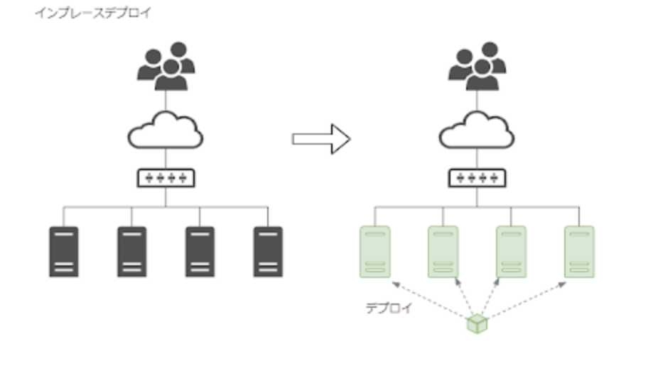
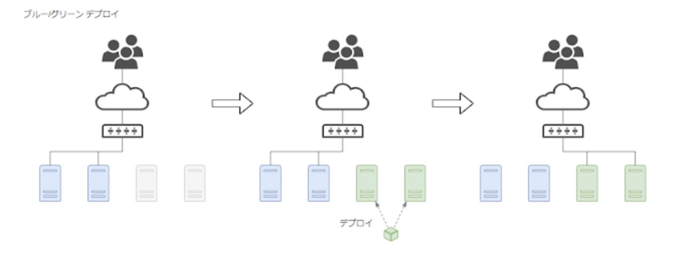
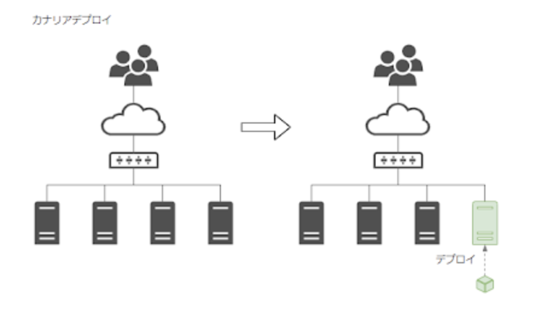

4. Code Series¶
ソースコードの反映をトリガーとして、ビルドデプロイといった一連のデリバリーを支援するサービス群
ソースコード管理サービスのCode Commit、ビルドサービスのCode Build、デプロイサービスのCode Deploy、これらの一連の処理を連携するデリバリーサービスのCodePipelineの総称
4.1. Code Commit¶
フルマネージドなソース管理（git repository）サービス
メリットとして、スケーラブルでセキュアであり、既存のgitツールともシームレスに連携
IAMベースでリポジトリに対する操作することができる。
4.1.1. Code Commitの操作¶
SDKやCLIを利用してリポジトリの追加やブランチ更新、ファイルの作成（put_file)をすることができる。 また、githubと連携することで、githubに加えられた変更を反映させることができる。 githubとの連携時には、初期設定で特定のブランチのみを対象にすることができる。
4.1.2. 利用手順¶
CodeCommitでリポジトリ名を設定
gitlabやgithubとの連携
4.1.3. CodeCommitとの連携¶
大きく方法は３種類
HTTPSを利用した連携
git-remote-codeCommitを利用した連携
SSHを利用した連携
4.1.3.1. HTTPSを利用した連携¶
IAMで作成したユーザーに対してgitの認証情報を作成しておいて、HTTPSを通じて、git連携をする。
プロキシを経由するときなどはこちらになる。
4.1.3.2. GRC(git-remote-codeCommmit)¶
AWS側でCode Commitの権限を持つIAMロールを作成しておく。 クライアント側でGRCをインストールして、ロールのARNをセットアップすると、AWSCLIの認証情報を使って、CodeCommitと連携してくれる。
4.1.3.3. SSHを利用した連携¶
公開鍵をCodeCommitアクセス用のIAMに紐づけ、秘密鍵はクライアントに紐付けることでSSHの認証を通す。
LocalPCで公開鍵と秘密鍵を作成
ssh-keygen -t rsa -b 4096 -m PEM -C <メールアドレス>
作成された公開鍵と秘密鍵は以下コマンドでクリップボードにコピーすると扱いやすい
pbcopy < ~/.ssh/id_rsa.pub
pbcopy < ~/.ssh/id_rsa
IAMユーザーに公開鍵を紐づける
IAM>アクセス管理>ユーザー>AWS CodeCommitのSSHキーにパブリックキーをアップロード
github側の設定時にSSHキーのIDを利用する。

githubに秘密鍵をSecretes登録
github>Setting>Secrets>Actions>New repository secrets
以下の情報を登録秘密鍵
Name:CODECOMMIT_SSH_PRIVATE_KEY
Value:プライベートキーの中身
SSHキーID
Name：CODECOMMIT_SSH_PRIVATE_KEY_ID
Value：SSHキーのID（awsのIAMのページで表示される。)
githubとgitcommitを紐づける
対象のリポジトリのフォルダのルートから.github/workflow/main.ymlを作成する。 ローカルのリポジトリからgithubにPushしても良いし、github側で設定してmainにコミットしても良い github>Actions>New Work Flow>set up a workflow
main.ymlは以下の設定をする。
name: Mirroring
on: [ push, delete ]
jobs:
to_codecommit:
runs-on: ubuntu-20.04
steps:
- uses: actions/checkout@v1
- uses: pixta-dev/repository-mirroring-action@v1
with:
target_repo_url:
ssh://git-codecommit.ap-northeast-1.amazonaws.com/v1/repos/[YOUR REPOSITORY NAME]
ssh_private_key:
${{ secrets.CODECOMMIT_SSH_PRIVATE_KEY }}
ssh_username:
${{ secrets.CODECOMMIT_SSH_PRIVATE_KEY_ID }}
動作確認
localにgithubのリポジトリをcloneして、新しいブランチを作ったり、ファイル編集してから、gitpushすると、codeCommitにまで反映されている
4.2. Code Build¶
ソースコードをコンパイル・テスト実行して、デプロイ可能なSWパッケージを作成するフルマネージドなビルドサービス
メリットとして、ビルド用のサーバのプロビジョニング・管理が不要となる
codebuildの成果物はartifactと呼ばれる。
実態としては、コンテナを立ち上げて、その中でコマンドが実行されている。
4.2.1. 利用手順¶
codebuildプロジェクトの設定
ソースプロバイダはcodecommitのリポジトリ
build環境/ランタイムは適切なものを設定
アーティファクトの設定
ServiceRoleの設定
buildspec.yamlの作成
4.2.2. CodeBuildのネットワーク¶
Code BuildはデフォルトではVPCにアタッチされず、AWS管理下で実行される。
自分が開発したRDSやコンテナなどのリソースにアクセスする場合は、CodeBuildをVPCに接続するような設定を加えることができる。 ただし注意点として、この設定をした場合に、NAT GWがサブネットにアタッチされていないとインターネットにアクセスすることができない点に注意。
4.2.3. buildspec.yml¶
buildspec.ymlにビルド処理の指示をコマンドとして記載することでCodeBuildが実行してくれる。
buildspec.ymlは、APPのソースコードPJのルートディレクトリに置いておく。
環境変数や必要な環境のインストール処理、ビルド処理や生成するアプリケーションの定義を記載しておく。
buildspec.ymlの記載項目
version：buildspec.ymlファイルのバージョン指定0.2推奨
phases：ビルド実行時にCodeBuildが実行するコマンド
install：インストール時にCodeBuildが実行
pre_build：ビルド前にCodeBuildが実行（ECRへの認証など）
build：ビルド実行中にCodeBuildが実行
post_build：ビルド後にCodeBuildが実行(ECRへのpushなど)
finally：エラーが発生しても実行されるコマンド
on-failure：エラーが発生したときに、次のコマンド実行か、エクセプションかを選
artifacts：ビルドの出力結果の保存先
files：必須項目でデプロイする成果物を指定
'**/*'を指定するとディレクトリは以下全てをデプロイする資産として指定base-directory：デプロイ対象のルートディレクトリを指定
4.2.4. buildspec.ymlにおける環境変数の設定¶
buildspec.ymlファイルに環境変数を設定する場合は、環境から環境変数を設定することができる。
また、secretsManagerと連携して、SecretsManagerの値を環境変数として渡すことができる。
ただし、SecretManagerと連携するときはCodeBuildのServiceRoleにSecretManagerへのReadPolicyを追加する
SecretsManager側でSecretsを作成

codebuildで、環境変数を設定する。
planetext:key-valueを設定
Secrets_Manager：secretmanager's arn:keyをvalueに設定

buildspec.yml内部では、設定した環境変数のkeyを${plane_key}や${secret_key}という形で指定すれば引用される。
4.2.5. 定期実行について¶
CloudWatchEventと連携して実装もできるし、CodeBuildトリガーも設定されているので、そちらでも設定できる。
4.2.6. アーティファクトとしてDockerコンテナを出力する場合¶
コンソール画面の設定として、--privilegedをTrueにしておく必要がある。
4.3. Code Deploy¶
EC2・Lambda・ECSに対してデプロイを行うサービス
AutoScaling構成に対しても自動で反映してくれる
ポイントとして、オンプレミスでもエージェントをインストールしておくことで利用することができる。
4.3.1. 利用手順¶
codeDeploy用のRoleを作成する
codeDeployのアプリケーション作成（詳細は各デプロイ先のセクション）
4.3.2. appsepc.yml¶
appspec.ymlとはデプロイの仕様を定義したファイルで、ファイルの配置先やデプロイのライフサイクルで実行するスクリプトを指定
4.3.3. デプロイの種類¶
4.3.3.1. Inplace¶
稼働中のサーバーを一度止めて、デプロイして、再起動する

4.3.3.2. blue/green¶
動作中のサーバー（ブルー）とは別グループのサーバー（グリーン）を立ち上げて、動作確認して移行する

4.3.3.3. canary¶
追加で新しいサーバーを立ち上げて、ALB側で一部のユーザーを割り振る。 一気にデプロイする目的じゃなくて、新しい昨日の動作確認の意味合いも含む

4.3.4. AWSサービスで準備されているデプロイ方式¶
EC2
In-place
Blue/Green
ECS/Lambda
canary
Linear
4.3.5. オンプレミスへのデプロイ¶
CodeDeployエージェントはポート番号443を利用したアウトバウンド通信が必要なため、ファイアーウォールで設定が必要
4.3.6. インターネットを経由しないデプロイ¶
VPCから直接接続するためのエンドポイントが準備されているが、EC2/ECS/Lambdaで準備するエンドポイントが異なる
EC2:codedeployエンドポイントとcodedeploy-commands-secureエンドポイント
ECS:codedeployエンドポイントのみ
Lambda:codedeployエンドポイントのみ
4.4. Code Pipeline¶
フルマネージドな継続的デリバリーサービス
ソースコードの変更をトリガーとして、ビルド・デプロイといった一連の流れを自動的に実行する
4.4.1. 設定手順¶
ソースステージ設定
CodeCommitとの連携を設定し、検知するリポジトリやブランチ名を設定する
※sourceのプロバイダーとして、gitlabが提供されていない点は注意

ビルドステージ設定
デプロイプロバイダーにCodeBuild
設定済のアプリケーションやデプロイグループを選択
デプロイステージ設定
デプロイ先を設定する。 S3への直接デプロイや、ECS/EC2へのデプロイが可能
4.4.2. Sourceステージ¶
GitHubとの連携を選択した場合、OAuth2.0のWebIDフェデレーションを利用して、GitHubにアクセスすることができる。 WebhookについてはGitHub側で設定することができ、Code Pipelineがポーリングする設定も可能。
4.4.3. パイプラインの状態変化と他サービス連携¶
パイプラインの状態変化をモニタリングして、他のサービスと連携する場合はCloud Watch Events(Event Bridge)イベントソースとして検知できる。
EventBridgeによるCodepipelineとSNSの連携
各種ステージの状態は以下の種類があり、パイプラインの状態変化に応じたアクションを設定することができる。
キャンセル
失敗
再開
開始
停止
停止中
成功
4.5. Code Artifact¶
アーティファクトを管理することができるリポジトリ
AWS常にプライベートなリポジトリを作成して、自作のパッケージを共有できるという魅力がある
ソースコードをビルドして生成されたパッケージを管理してくれる。
対応はnpm(js),PyPI(python),maven(java)
4.5.1. AWS CodeArtifactの設定¶
domainとdomain配下にrepositoryを作れば準備は完了。
repositoryは各種アーティファクトのエンドポイントになる
domainはrepositoryを集約する概念
domainを作成（これは共通して１つで利用することが多い）
repositoryを作成（これは機能ごとに作成する）
4.5.2. Code Artifactへアーティファクトを登録する（curlから）¶
サードパーティのjarファイルなどをcodeArtifactで管理するしたい場合、localのjarファイルをcurlコマンドでcodeArtifactに登録できる
Cloud Shellを起動する
Cloud Shellへファイルをアップロードする
CodeArtifactの認証トークン取得（12時間期限あり
export CODEARTIFACT_TOKEN=
aws codeartifact get-authorization-token --domain [MY_DOMAIN] --query authorizationToken --output text
CodeArtifactへのアップロード
以下の情報を設定する※登録するjarファイル名をアプリとバージョンの形にすることMY_DOMAIN：CodeArtifactで作成したドメイン名
MY_REPOSITORY：CodeArtifactで作成したリポジトリ
MY_AWS_ID：自分のアカウントの12桁のID
MY-APP:登録するアプリのファイル名
VER：バージョン(1.0.0)
LOCAL-MY-APP：登録するファイル名
curl --request PUT https://[MY_DOMAIN]-[MY_AWS_ID].d.codeartifact.ap-northeast-1.amazonaws.com/maven/[MY_REPOSITORY]/com/[MY_COMPANY]/app/[MY_APP]/[VER]/[MY_APP]-[VER].jar
--user "aws:$CODEARTIFACT_TOKEN" --header "Content-Type: application/octet-stream"
--data-binary @[LOCAL-MY-APP].jar
公開設定
curlコマンドで登録すると公開sれていないので、登録されたアーティファクトからアクションを選択して発行する。
この発行をしないとアーティファクトを利用することができない点に注意
4.5.3. Code Artifactへアーティファクトを登録する（mvnから）★実際にやりたい¶
mvnからライブラリをcodeArtifactに登録する場合、pom.xmlにdistributionManagerのセクションを追加して、codeartifactの情報を付与する。 codeartifactの認証情報はsettings.xmlに追記して、deploy時に指定する。
AWS CodeArtifactのTOKENの取得
exportして環境変数として登録する（再掲）
CICDの時はbuildspec.ymlのprebuildに記載
export CODEARTIFACT_TOKEN=
aws codeartifact get-authorization-token --domain [MY_DOMAIN] --query authorizationToken --output text
pom.xmlの修正
distributionManagerにCodeArtifactの情報を記述。IDやNameは利用する際に使う。
<distributionManagement>
<repository>
<id>CODE_ARTIFACT_ID</id>
<name>CODE_ARTIFACT_NAME</name>
<url>https://[MY_DOMAIN]-[AWS_ID].d.codeartifact.ap-northeast-1.amazonaws.com/maven/[MY_REPOSITORY]/</url>
</repository>
</distributionManagement>
settings.xmlの修正 CodeArtifactの認証情報を追加
<servers>
<server>
<id>CODE_ARTIFACT_ID</id>
<username>aws</username>
<password>${env.CODEARTIFACT_AUTH_TOKEN}</password>
</server>
</servers>
mvn deploy
mvn deploy -s settings.xml
AWSのマネジメントコンソールからアップロード資材を確認する
4.5.4. Code Artifactの資材を呼び出してビルドする¶
codeArtifactに格納したライブラリの依存関係と接続先をpomに記述
pom.xmlに接続先を記述
<profiles>
<profile>
<id>CODE_ARTIFACT_ID</id>
<activation>
<activeByDefault>true</activeByDefault>
</activation>
<repositories>
<repository>
<id>CODE_ARTIFACT_ID</id>
<url>https://[MY_DOMAIN]-[AWS_ID].d.codeartifact.ap-northeast-1.amazonaws.com/maven/[MY_REPOSITORY]/</url>
</repository>
</repositories>
</profile>
</profiles>
codeArtifactに依存関係を記述（codeArtifactのライブラリ) AWSのConsoleを見ながら、設定する
<dependencies>
<dependency>
<groupId>com.[CodeArtifact].[App].[Path]</groupId>
<artifactId>[Artifact]</artifactId>
<version>[VER]</version>
</dependency>
</dependencies>
4.6. S3へのCICD¶
S3に静的ウェブサイトホスティングを設定
codecommitではビルドステージはスキップ
デプロイステージでプロバイダーでS3を設定して、リージョンやバケットを選択
4.7. EC2へのCICD¶
EC2の設定、buildspec.ymlではcodedeployのアプリケーションとの連携。 codedeployではappspec.ymlの作成が必要
4.7.1. EC2の作成¶
artifactの格納場所作成(S3のバケット作成
タグ名でCICDの対象を設定できるので、タグ名を設定しておくと良い
EC2にcode deploy エージェントをインストールしておく
AWS Code Deploy エージェントのコマンドラインからのインストールを実行
wget https://aws-codedeploy-ap-northeast-1.s3.ap-northeast-1.amazonaws.com/latest/install
4.7.2. buildspec.ymlの作成¶
aws deploy pushでcodedeployのアプリケーションの対象設定をする。
version: 0.2
phases:
build:
commands:
- aws deploy push --application-name [YOUT_CODEDEPLOY_APPLICATION_NAME] --s3-location s3://[YOUR_BUCKT_NAME]/artifact.zip --source src
artifacts:
files:
- '**/*'
base-directory: src
4.7.3. appspec.ymlの作成¶
フォルダ構成
|-src
| |---index.html
| |---appspec.yml
|
|-buidlspe.yaml
appspec.ymlの記載項目
version：0.0のみ
os：linux or Windows
files：ビルドした結果をどこに配置するかの設定
hook：インストール前後の処理
appspec.yml(httpdがEC2にインストールされている場合）
version: 0.0
os: linux
files:
- source: index.html
destination: /var/www/html/
4.7.4. トラブルシューティング¶
codeBuildを手動で実行するとエラー
[Container] 2022/10/23 13:46:20 Phase context status code: COMMAND_EXECUTION_ERROR Message: Error while executing command: aws deploy push --application-name h4b-cicd-codedeploy-application --s3-location s3://h4b-cicd-artifact-fujisiroms/artifact.zip --source src. Reason: exit status 255
appspec.ymlがsrcディレクトリは以下になかったことが原因
codeDeployを手動で実行するとエラー
The overall deployment failed because too many individual instances failed deployment, too few healthy instances are available for deployment, or some instances in your deployment group are experiencing problems.
appspec.ymlの文法がミスったまま、Deployしていたのが原因。appspec.ymlを修正してからbuildとdeployを実行
4.8. ECRへのCICD¶
buildspec.ymlではimagedefinitions.jsonを作成する設定が必要。 ECSにデプロイするための、Serviceロールの追加が必要。
4.8.1. CodeBuildの設定¶
buildspec.ymlの作成
ECRへのpushまでを設定する
imagedefinitions.jsonはdeployの際にタスクやサービスを変更するときに利用する。
サービスロールに
AmazonEC2ContainerRegistryPowerUserを付与する
version: 0.2
phases:
pre_build:
commands:
- echo Logging in to Amazon ECR...
- aws --version
- $(aws ecr get-login --region ${AWS_DEFAULT_REGION})
- REPOSITORY_URI=${AWS_ACCOUNT_ID}.dkr.ecr.${AWS_DEFAULT_REGION}.amazonaws.com/${IMAGE_NAME}
- IMAGE_TAG=$(echo $CODEBUILD_RESOLVED_SOURCE_VERSION | cut -c 1-7)
build:
commands:
- echo Build started on `date`
- echo Building the Docker image...
- docker build -t $REPOSITORY_URI:latest .
- docker tag $REPOSITORY_URI:latest $REPOSITORY_URI:$IMAGE_TAG
post_build:
commands:
- echo Build completed on `date`
- echo Pushing the Docker images...
- docker push $REPOSITORY_URI:latest
- docker push $REPOSITORY_URI:$IMAGE_TAG
- echo Writing image definitions file...
- echo "[{\"name\":\"${IMAGE_NAME}\",\"imageUri\":\"${REPOSITORY_URI}:${IMAGE_TAG}\"}]" > imagedefinitions.json
artifacts:
files: imagedefinitions.json
4.8.1.1. javaをデプロイする場合の各種設定情報¶
javaを利用する場合のOSはUbuntsuを選択。
ランタイムはスタンダート
イメージは4.0がUbuntsuのver18で、5.0がver20
4.8.2. codedeployの設定¶
codepipelineから順次設定をして、デプロイステージにおいて、クラスター名やサービス名を選択するだけ。
4.8.3. トラブルシューティング：Too Many Requests. でビルドが失敗する¶
error pulling image configuration: toomanyrequests: Too Many Requests. Please see https://docs.docker.com/docker-hub/download-rate-limit/
4.8.3.1. 原因¶
2020年8月に Docker Hub ではコンテナイメージの Pull 回数にレート制限を設けることを発表している。
CodeBuild を非 VPC 環境のプロジェクトとして作成している場合、CodeBuild のグローバル IP は共通アドレスが利用されているため、 自分のビルド環境が 6 時間以内で 1 回目の pull だったとしても、そのときに割り当てられていた CodeBuild のグローバル IP が 6時間以内で 101 回目の pull であった場合、そのリクエストは Too Many Requests. になります。
4.8.3.2. 対策:build中に、dockerhubにログインする¶
SecretsManagerにdockerhubのログインIDとPasswordを設定（例えばusernameとpassword)※ログインIDは一律で小文字にしないとエラーが出る
codebuildの環境変数でsecretManagerとの連携を設定する
buildspec.ymlで環境変数を受け取り、dockerhubにログインする
phases:
pre_build:
commands:
# ECR へのログイン
- echo Logging in to Amazon ECR...
- $(aws ecr get-login --no-include-email --region $AWS_DEFAULT_REGION)
# Docker Hub へのログイン
- echo Logging in to Docker Hub...
- echo $DOCKERHUB_PASS | docker login -u $DOCKERHUB_USER --password-stdin
# コミット ID をイメージタグに設定
- IMAGE_TAG=$CODEBUILD_RESOLVED_SOURCE_VERSION